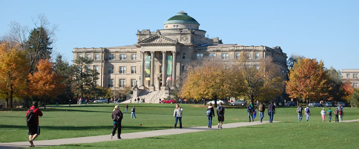
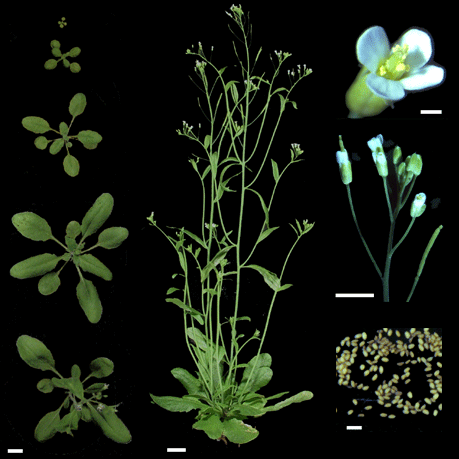
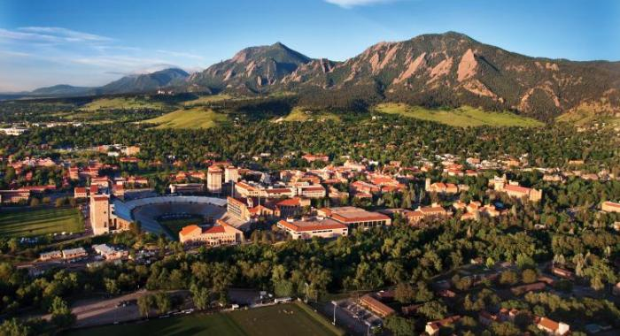
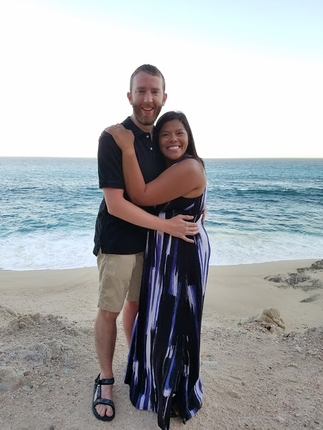
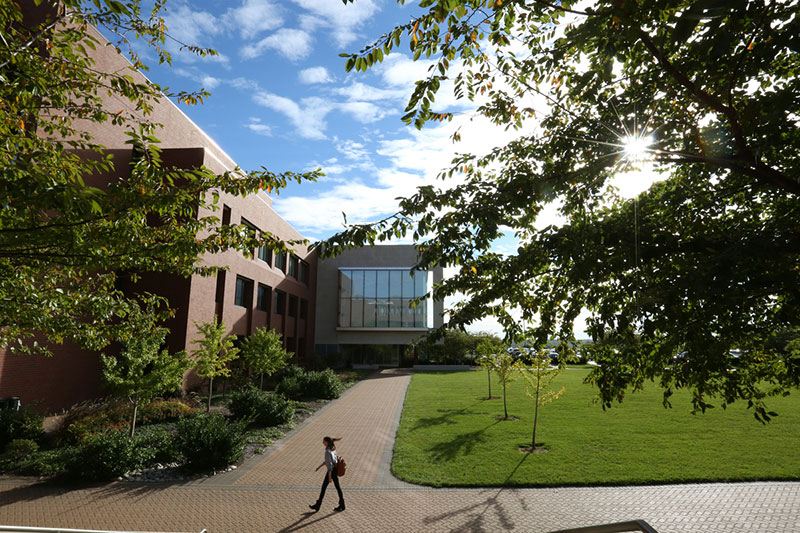
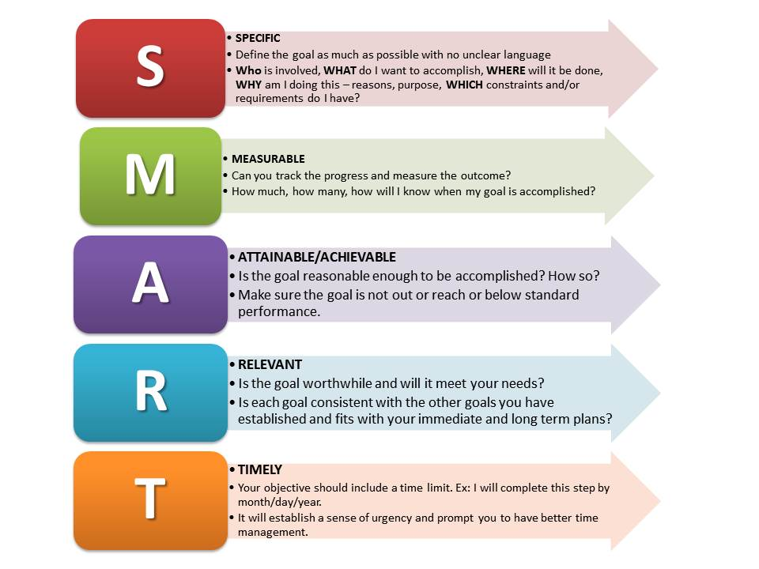

A journey from the sciences to building apps
The beginning
In the Fall of 2010, my love for Biology led me to begin pursue the remaining two years of college at Iowa State.
It was a tough decision seeing as I had a fascination with all sorts of topics ‐ Math, English, Physics, Arts ‐
but it felt right to pursue something that is so ubiquitous in our surroundings. The study of Biology was everywhere;
whether looking at the bacteria found on household surfaces to the mushrooms found in a garden, the subject
could be explored in depth anywhere I looked.

My two years at the University resulted in my B.S. degree in Biology and a strong background in Plant Genetics.
Gratefully I was given the opportunity to work with incredibly bright professors who pushed me to
explore the unknown elements of our field. They offered me work as a Research Assistant with both the
Genetics laboratory and the Plant Systematics laboratory. Both provided me valuable experience with
the scientific method used by research professionals in academia. They set me on the path to apply my learning
in a real-world setting.
Entering into the work-force
In the Fall of 2012, I moved to Johnston, Iowa and started working with DuPont Pioneer, an agriculture company
which specializes in developing genetically modified seeds. I gained a unique set of skills working in both
the greenhouses and in the laboratory. In the greenhouses, I took care of a special
little plant called Arabidopsis thaliana which is renowned in the science community as a model organism.
No, it's not because it volunteers in its community and pays taxes. Rather, it is easily manipulated for experimentation.
It has a very short life-cycle (6-8 weeks), can be grown with easily added genetic markers, and is very hardy and robust.

After six month working in such a prestigious environment, I was laid off. Although this was initially difficult, it gave
me the opportunity to move to Colorado while I was still young and enjoy the outdoor playground it provides. Living in
a nearby suburb of Denver, I waited tables at Texas Roadhouse and spent the rest of my time in the mountains.
I even broke my first bone (dominant wrist, of all thing) learning how to snowboard...you can imagine how
difficult it can be to serve with only one hand! A simple wrist break couldn't stop me from hiking and enjoying
the great outdoors, though. Nonetheless, it spurred me to look into a graduate degree to have a less physical job
in case another accident were ever to occur.
Graduate School!
In April of 2014 I was accepted into University of Colorado Boulder's Speech Language Pathology Master's Program. At that point
in time, I thought a Master's was what I needed to move my life forward. I enjoy learning languages and admire the work
that SLP's do to help their patients. Later that year I moved to Boulder and began my three-year program to become an SLP.
While I can look back now with appreciation of my learning and teachers there, it was difficult to realize this path was not the
right one for me. I had devoted significant time, money, and resources into getting into the program, and had gone through a year
of classes and clinic before I knew enough was enough. This was not my dream to fulfill. I am thankful that my family and friends
understood how I felt when I announced I would not complete my Master's in the field. Still, it was an extremely hard experience
to go through, as the feeling of failure was constant for months after resigning from the program.

There was a silver lining to my quitting, however. Shortly after the announcement, I met my future fiancée on the dating app
'Tinder'. Cristina was a med student at the Kansas City University of Medicine and Biosciences. We were amazed at the fact we shared
a link to Kansas City and hit it off immediately. Since her third-year rotations were in Denver, we ended up having a long-distance
relationship for around the first year, as I moved back to Kansas City to live with family while I pursued programming.

A love for code
January 2016 brought on a return to community college to take classes in Web Development. Having dabbled in programming here and there,
I knew it was something I enjoyed. On the first day, though, I knew it was more than that. This is my passion. I love creating something
out of nothing and thinking of the possibilities available. There are so many applications that can help solve problems faced by individuals,
businesses, non-profits, etc. Since then, I have inundated myself with the likes of JavaScript, jQuery, PHP, mySQL, and now Python. While
at JCCC, I knew I needed a job in the meantime and started working in IT to enhance my understanding of computers while continuing to practice
programming. Now that I have some professional experience in the Tech industry, I plan on moving forward with my plans of becoming a full-time
developer. I would like to focus on the data side of programming. Although I like building websites and making them look and feel nice, going
through big data sets is a favorite of mine. Perhaps it is the thousands of data sets I have analyzed over my past careers, but I feel I have
a good eye for setting up and maintaining data tables.

A 'SMART' goal
One of the things which has helped me succeed in life is the use of SMART goals. These make sure a goal is crystal clear and can be reached.
The requirements for a SMART goal are that it should be:
- Specific (simple, sensible, significant)
- Measurable (meaningful, motivating)
- Achievable (agreed, attainable)
- Relevant (reasonable, realistic and resourced, results-based)
- Time bound (time-based, time limited, time/cost limited, timely, time-sensitive)
With these requirements in mind, I ascertain the following:
I will gain the skills and experience necessary to become a full-time programmer at a Kansas City area business by practicing programming
at least fifteen hours per week and I will be hired by June 2018.
